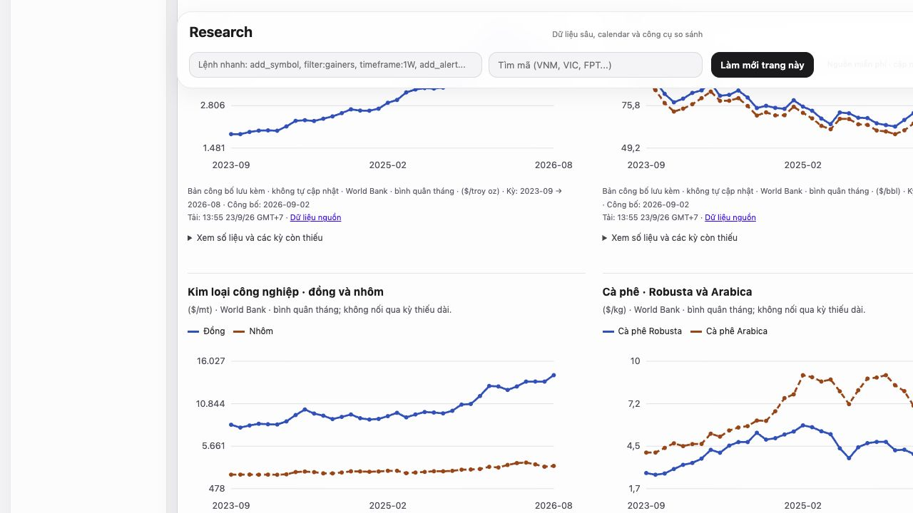

● ● ●MarketTerminal / Research↗

A perspective on markets.
A personal terminal that started with broad market coverage and became an exercise in information hierarchy and data judgment.
PERSONAL PROTOTYPERead the story ↗
NGUYỄN TRƯƠNG
I work with both digital products and operational structures: organizing information, connecting tools and shaping processes. I also make room for content, video and 3D, so ideas can be put into practice and communicated clearly.
Explore what I make ↗Systems I help shape ↗
A personal terminal that started with broad market coverage and became an exercise in information hierarchy and data judgment.
A recording I supplied so people can look at an actual piece of practice alongside the Blender entry in my skills.
Alongside personal projects, I help shape information structures, processes and coordination between tools at work. These reconstructed, high-level diagrams explain that contribution.
I help shape how information enters, is organized, gets assigned and moves between tools. The point is not just connecting software, but deciding what each part is responsible for.
Ownership by information category
Controlled synchronization
No assumed collection of conversation history
Select a stage to see its purpose, what I shaped and the implementation boundaries.
High-level reconstructions from work experience, not screenshots of internal systems. No organizations, people or real records are disclosed; organizational work is not presented as a personal product.
Explore my role & each structure ↗A website needs information structure. A workflow needs a clear process. A video needs a story. I want to grow at the intersection of these disciplines, rather than treat each skill as an isolated tool.
Explore 9 areas ↗Technology · Creativity · Practice
Web, AI workflows, automation and research; connected with data, multilingual content, video and 3D practice.
A personal terminal that started with broad market coverage and became an exercise in information hierarchy and data judgment.
I set the scope, required free sources and reviewed the information hierarchy. I also required clear sample-data labels, then accepted the practical coverage of the sources available.
A recording I supplied so people can look at an actual piece of practice alongside the Blender entry in my skills.
I selected and supplied the recording, asked for it to be included, then gave feedback when its opening behavior and pace did not feel right.
I wanted to see my remaining usage and next reset while working. That small need led to a private macOS utility, built and refined with AI assistance.
I specified the need, tried the presentation and asked for changes where it confused me. My feedback moved the design from a battery metaphor to a single bar, then to a compact arrangement of percentage and reset time.
What began as a QR link for recruiters became a website where people can get an overview, then open the work behind it.
I set the purpose, chose the black-and-white direction, shaped the structure and gave feedback through successive versions. I asked for less overconfident copy, more interaction and my own practice footage.
https://nguyentruonggiadat-beep.github.io/nguyen-truong-gia-dat-portfolio/
https://github.com/nguyentruonggiadat-beep